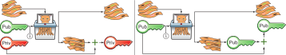

Wallets
This chapter covers
-
Automating payments
-
Creating and managing keys
-
Making simple, secure key backups
So far, we’ve done nothing to improve the user experience for the company’s coworkers using the cookie token spreadsheet. The situation has become worse for users because emails to Lisa now need more information than in the beginning. On top of this, users should take extra steps to use multiple addresses to preserve their privacy.
In this chapter, we’ll build a mobile app, called a wallet (Bitcoin wallets), that handles many of the common tasks users want to perform. This wallet will create new addresses, store private keys, simplify how addresses are transferred between users, and automate the payment process.
We’ll discuss different approaches to wallet backups. We’ll also look at a new way to generate keys, called hierarchical deterministic wallets (HD wallets), so backups become dead simple; you only need to back up a single random number, called a seed, once and for all. We’ll finish the chapter with an optional deep dive into the math behind public key derivation.
This chapter won’t change anything regarding Lisa’s work or the spreadsheet. We focus only on users here.
First wallet version
Among you and your coworkers, a group of software developers builds a mobile app called a wallet to simplify common tasks for themselves and other users. The group identifies the following tasks as the most common:
- Create new addresses
-
Users must create new cookie token addresses every now and then. They might want to use different addresses for different purposes or even different addresses for all payments for privacy and security reasons.
- Manage private keys
-
For each address created, the wallet needs to store and manage the corresponding private key. Keeping private keys safe from intruders is a delicate task.
- Transfer payment details from payee to payer
-
When John wants to buy a cookie, he needs to get the cafe’s address and the payment amount into his app. Writing it by hand is cumbersome and error-prone, so it would be nice if John could scan the details with his camera instead.
- Make a payment
-
The app should be able to send an email to Lisa with the digitally signed payment details.
- Keep track of funds
-
Users want to know how many cookies they can afford. The app should display the total number of cookie tokens a user has.
- Back up private keys
-
When private keys are created in the app, they only exist in the app. If the mobile phone is lost or broken, the private keys are gone. You know by now what happens when you lose your keys, don’t you? You need a backup facility for private keys.
The development team builds an initial version of the app and calls it the wallet. The term wallet isn’t perfect because the app doesn’t really contain money. It contains the keys needed to spend money. The actual money is stored in the spreadsheet. The app is more akin to a physical keyring; but the term wallet is widely used in the Bitcoin world for all things that store private keys, so we should get over it and move on. Let’s go through this wallet’s features.
Suppose, once again, that John wants to buy a cookie in the cafe (John buys a cookie using the wallet app. The cafe generates a key and displays to John a QR code with payment details. John scans the payment details and taps OK to approve the payment. John’s wallet sends an email to Lisa.). Both John and the cafe are using this new app.
The process goes through several steps:
-
The cafe asks its wallet to create a new address and request 10 CT to that address. This new address and the amount are displayed on the screen as a QR code. The QR code contains information on how much to pay, so John doesn’t have to type that in manually.
-
John points his phone’s camera at the QR code to scan the payment details. It scans the payment URI (uniform resource identifier, a general specification on how to identify stuff; a web URL is an example of a URI):
ct:19UzNFW4Fq8wm8mtWmoPZAzE3tcB9tZVtN?amount=10
This tells John’s phone to launch the cookie token wallet (ct:) and
pay 10 (amount=10) cookie tokens to the address
19UzNFW4Fq8wm8mtWmoPZAzE3tcB9tZVtN.
-
John’s wallet displays the payment details to John, who checks that they’re reasonable and clicks OK.
-
John’s wallet creates an email to Lisa that looks the same as before. The wallet automatically selects an address to send from and signs the message with the correct private key. On Lisa’s side, nothing has changed. She verifies and executes the payment exactly as before.
Let’s take a closer look at what John’s wallet does in step 4 (John has just clicked OK in his wallet to approve the payment. The wallet takes care of the rest. It selects a key with enough funds and signs a message to Lisa. It then automatically emails the signed message to Lisa.). The wallet does the same thing a user would do manually in the earlier examples.

Notice that the wallet manages three key pairs: two with funds and one with no funds. With this new wallet, users can have as many addresses as they want, which is good for privacy. The wallet will keep track of them for the user.
The cafe’s wallet, as well as John’s wallet, will check the spreadsheet every now and then to see if there are any new payments concerning any of the wallet’s keys, as a sender, a recipient, or both (John’s and the cafe’s wallets check the spreadsheet every few seconds. If a new payment, either incoming or outgoing, is found, the wallet updates the balance of the concerned keys and notifies its user.).
Even though John knows about the payment before Lisa confirms it in the spreadsheet, his wallet won’t update the balance until it’s confirmed. Why? Lisa might not approve the payment. Maybe the payment became corrupted during transfer, or the email ended up in Lisa’s spam folder, so she doesn’t see it.
If the wallet updates the balance without first seeing it in the spreadsheet, it could give false information to John. The wallet could, of course, be kind enough to inform John that a payment is pending confirmation.
Private key backups
The development team creates a feature to back up the wallet’s private keys. The idea is that the wallet creates a text file, the backup file, with all private keys in it and sends this file to an email address the user chooses.
Imagine that John wants to back up his private keys. The wallet collects all the keys it has ever created and writes them into a text file (John backs up his private keys. They’re sent in a text file to his email address.).
The text file is emailed to John’s email address. Can you see any problems with this? Yes, the biggest problem is that the keys have left the privacy of the wallet application and are being sent into the wild. Anyone with access to the email server or any other systems involved might be able to get the private keys without John noticing.
But another problem exists. As soon as John creates a new address after the backup is made, this new address isn’t backed up. John must make a new backup that includes the new key. For every new key, he must make a new backup. Doing backups for every address becomes tiresome for the user.
Let’s look at a few simple solutions to these two problems:
-
Automatically send a backup when an address is created. This increases the risk of theft because you send more backups.
-
Pre-create 100 addresses, and make a backup of them. Repeat when the first 100 addresses are used. This also increases the risk of theft, but not as much as solution 1.
-
Encrypt the backup with a password. This will secure the backed-up keys from theft.
A combination of solutions 2 and 3 seems like a good strategy; you seldom need to do a backup, and the backups are secured by a strong password.
The process is similar to the previous process, but this time John enters a password that’s used to encrypt the private keys (John backs up his private keys. They’re sent in a file encrypted with a password that John enters into his phone.). If John loses his phone, he needs the password and the backup file to restore his private keys.
If John loses his phone, he can easily install the wallet app on another phone. John sends the backup file to the app and enters his password; the keys are decrypted from the backup file and added to his wallet app.
A few words on password strength
A password’s strength is measured in entropy. The higher the entropy, the harder it is to guess the password. The word entropy, as used in information security, comes from thermodynamics and means disorder or uncertainty. Suppose you construct a password of 8 characters from among the following 64 characters:
ABCDEFGHIJKLMNOPQRSTUVWXYZabcdefghijklmnopqrstuvwxyz0123456789+/
Each character in the password would then represent 6 bits of entropy
because there are 64 = 26 possible characters. If you select the 8
characters randomly (no cherry-picking, please!), say E3NrkbA7, the
eight-character password will have 6 × 8 = 48 bits of entropy. This is
equivalent in strength to 48 coin flips.

Suppose instead that you select random words from a dictionary of 211= 2,048 words. How many words do you need to use to beat the 48-bit entropy of your eight-character password? Four words wouldn’t be enough because 4 × 11 = 44 bits of entropy. But five words corresponds to 55 bits of entropy, which beats the password’s entropy.
A password’s real entropy also depends on what an attacker knows about
the password. For example, suppose an attacker, Mallory, steals John’s
encrypted backup file and tries to perform a brute-force attack
on it. A brute-force attack means the attacker makes repeated
password guesses, over and over, until they find the correct
password. If Mallory knows the password’s length is exactly 8 and the
characters are chosen from the 64 characters mentioned, the entropy is
48 bits. If she happens to know that the second character is 3, the
entropy drops to 6 × 7 = 42 bits. On the other hand, if Mallory
doesn’t know how many characters the password has, it will be harder
for her, meaning the entropy will be higher.
This is true only if password selection is truly random. If John uses
cherry-picking to select the password j0Hn4321, the entropy
decreases dramatically. Typical password brute-force attack programs
first try a lot of known words and names in different variations
before trying more “random-looking” passwords. John is a well-known
name, so an attacker will try a lot of different variations of that
name as well as many other names and words. For example:
butter122 … waLk129 … go0die muh4mm@d john John JOhn JOHn JOHN j0hn j0Hn jOhn jOHn jOHN … john1 … … john12 J0hn12 … j0Hn321 … j0Hn4321
Bingo! Suppose there are 1,000,000 common words and names, and each word can come in 100,000 variations, on average. That’s 100 billion different passwords to test, which corresponds to about 37 bits of entropy; 100 billion tries will take a high-end desktop computer a few days to perform. Let’s say, for simplicity, that it takes one day. If John uses a truly random password, the entropy for the attacker is around 48 bits. It would take around 2,000 days, or about 5.5 years, to crack the password.
Problems with password-encrypted backups
The process for password-encrypted backups works pretty well, but it also introduces new problems:
- More things to secure
-
John now needs to keep track of two things: a backup file and a password. In the first version, only a backup file was needed.
- Forgotten password
-
Passwords that are rarely used, as is the case with backup passwords, will eventually be forgotten. You can write them down on paper and store them in a safe place to mitigate this issue. You can also store them using password-manager software, such as LastPass or KeePass.
- Technology advancements
-
As time passes, new, more advanced hardware and software is built that makes password cracking faster. If your eight-character password was safe five years ago, it’s not good enough today. Passwords need more entropy as technology improves. You can re-encrypt your backup files every two years with a stronger password, but that’s a complicated process that few users will manage.
- Randomness is hard
-
Coming up with random passwords is really hard. When the app asks John for a password, he needs to produce one on the spot. He doesn’t have time to flip a coin 48 times to produce a good password. He will most likely make up something with far less entropy. One way to deal with this is to have the wallet give John a generated password. But this password is likely harder to remember than a self-invented password, which will increase the likelihood of a forgotten password.
It seems you haven’t yet come up with a good way of dealing with backups. Let’s not settle for this half-bad solution—there are better approaches.
Hierarchical deterministic wallets
One of the brighter developers at the company, a cryptographer, comes up with a new way to handle key creation to improve the backup situation and bring totally new features to wallets.
She realizes that if all private keys in a wallet were generated from a single random number called a random seed, the whole wallet could be backed up by writing down the seed on a piece of paper and storing it in a safe place (Backing up a seed. This is how you want to make backups.).
She talks to some other cryptographers, and they decide on a strategy. They’re going to make an HD wallet. Basically, keys are organized as a tree, in which one key is the root of the tree, and this root can have any number of child keys. Each child key can in turn have a large number of children of its own, and so on.
Suppose Rita wants to organize her keys based on their purpose and generate five keys to use for shopping at the cafe and another three keys to use as a savings account. Rita creates two accounts, with five addresses in the shopping account and three addresses in the savings account. shows how her keys could be organized.
The keys are organized as a tree, but it’s a tree turned upside down because that’s how computer geeks typically draw their trees. Anyway, the root key of the tree (at the top) is called the master private key. It’s the key from which all the rest of the keys are derived. The master private key has two child keys: one that represents the shopping account (left, in Rita creates two accounts, with five addresses in the shopping account and three addresses in the savings account.) and one that represents the savings account (right). Each of these children has, in turn, its own children. The shopping account key has five children, and the savings account key has three children. These eight children have no children of their own, which is why they’re called leaves of the tree. The leaves are the private keys Rita uses to store cookie tokens, so an address is generated from each of these eight private keys.
Note how the keys in the tree are numbered. Each set of children is
numbered from 0 and upwards. This is used to give each key a unique
identifier. For example the first, index 0, savings key is denoted
m/1/0. m is special and refers to the master private key.
How is a tree structure like this accomplished? Let’s look closer at the creation of some parts of the tree.
Three important processes are performed to create the tree, as Creating the first two of Rita’s three savings keys. A random seed is used to create a master extended private key, which is then used to create child extended private keys. shows:
-
A random seed of 128 bits is generated. This seed is what the whole tree grows up (um, down) from.
-
The master extended private key is derived from the seed.
-
The descendant_ extended private keys_ of the master extended private key are derived.
An extended private key (xprv) contains two items: a private key and a chain code (An xprv consists of a private key and a chain code.).
The private key is indistinguishable from an old-type private key generated directly from a random number generator. You can use it to derive a public key and a cookie token address. You usually make addresses only out of leaves, but you could use internal keys as well. The other part of the xprv is the chain code. A chain code is the rightmost 256 bits of a 512-bit hash, hence the right-half hash icon in the figure. You’ll see soon how that hash is created. The chain code’s purpose is to provide entropy when generating a child xprv. The master xprv doesn’t differ from other xprvs, but we give it a special name because it’s the ancestor of all keys in the tree. It is, however, created differently.
In step 1, the random seed is created in the same way as when you created private keys in [ch02]. In this example, you generate 128 bits of random data, but it could just as well be 256 bits depending on the level of security you want—128 bits are enough for most users. You’ll see later how the choice of seed size will affect the backup process; a longer seed means more writing on a piece of paper during backup. We’ll get back to this in Back to backup.
Steps 2 and 3 deserve their own subsections.
Deriving a master extended private key
Let’s look deeper into how to generate the master xprv (Deriving Rita’s master xprv. The seed is hashed with HMAC-SHA512. The resulting hash of 512 bits is split into the left 256 bits, which become the master private key, and the right 256 bits, which become the chain code.).
To create the master private key, the seed is hashed using HMAC-SHA512 (HMAC is short for Hash Based Message Authentication Code), which produces a 512-bit hash value. HMAC-SHA512 is a special cryptographic hash function that, besides the normal single input, also takes a key. From a user’s perspective, you can regard HMAC-SHA512 as a normal cryptographic hash function but with multiple inputs. The hash value is split into the left 256 bits and the right 256 bits. The left 256 bits become the master private key, which is a normal private key; it’s called the master private key because all other private keys are derived from this single private key (and the chain code). The right 256 bits become the chain code, used in the next step to derive children from the master xprv.
Deriving a child extended private key
You just created Rita’s master xprv. It’s time to derive the child xprv
that groups together her three savings keys. The direct children of an
xprv can be derived in any order. Let’s derive the savings account key,
m/1, first. The process for deriving a child xprv from a parent xprv
is as follows (Deriving a child xprv from a parent xprv. The parent’s public key and chain code and the desired index are hashed together. The parent private key is added to the left half of the hash, and the sum becomes the child private key. The right half becomes the child chain code.):
-
The desired index is appended to the parent public key.
-
The public key and index become the input to HMAC-SHA512. The parent chain code acts as a source of entropy to the hash function. To simplify, think of it as three pieces of data are hashed together.
-
The 512-bit hash value is split in half:
-
The left 256 bits are added, with normal addition (modulo 2256), to the parent private key. The sum becomes the child private key.
-
The right 256 bits become the child chain code.
-
-
The child private key and the child chain code together form the child xprv.
This same process is used for all children and grandchildren of the master xprv until you have all the keys Rita wanted in her wallet.
You might be wondering why you need the addition—why not use the left 256 bits as the child private key? The 512-bit hash is calculated from the public key and the chain code—collectively called the extended public key (xpub)—and an index. You’ll see later how to use the xpub in less secure environments, such as a web server, to generate a corresponding tree of public keys. You need to add the parent private key to the left 256 bits to make it impossible for someone with the xpub to generate child private keys.
Where were we?
Let’s recall why you’re here: to create a wallet app that makes life easier for end users (You’re working on making a great wallet for users.).
The main duties of a wallet are to
-
Manage private keys
-
Create new addresses
-
Transfer payment details from payee to payer
-
Make a payment
-
Keep track of funds
-
Back up private keys
We’ve covered the first five items, but we aren’t quite finished with backups. We just looked at xprv derivation, which is the groundwork for better backups.
Back to backup
You want a safe, easy way to back up private keys. You’ve created an HD wallet to generate any number of private keys from a single seed. What’s the minimum Rita needs to back up to restore all keys in her wallet, should she lose it? Right: the seed (and the tree structure, see margin). As long as her seed is safe, she can always re-create all her keys.
Suppose Rita’s 128-bit (16-byte) seed is
16432a207785ec5c4e5a226e3bde819d
It’s a lot easier to write these 32-hex digits on a piece of paper than it would be to write her eight private keys. But the biggest win is that Rita can write this down once and lock it in a safe. As long as that paper is safe, her wallet is safe from accidental loss. She can even create new keys from the same seed without having to make another backup.
But it’s still difficult to write this down without any typos. What if Rita makes a typo and then loses her wallet? She won’t be able to restore any of her keys! You need something even simpler that’s more compatible with how humans work.
Mnemonic sentences
Recall that the seed is a sequence of bits. For example, Rita’s seed is 128 bits long. What if you could encode those bits in a more human-friendly way? You can!
Rita’s wallet can display the seed as a sequence of 12 English words, called a mnemonic sentence:
Seed: 16432a207785ec5c4e5a226e3bde819d
Mnemonic: bind bone marine upper gain comfort
defense dust hotel ten parrot depend
This mnemonic sentence encodes the seed in a human-readable way. It’s much more approachable to write down 12 words than it is to write down cryptic hex code. If Rita loses her wallet, she can install the wallet app on another phone and restore the seed from those 12 words. Rita can regenerate all her private keys from that seed.
Encoding a seed into a mnemonic sentence
|
Warning
|
We’re going to explore how this encoding works. It’s really fun, but if you think this section goes too deep, you can accept the previous paragraph and skip to Extended public keys. |
The encoding starts with the random seed, as shown in Encoding a random seed as a 12-word mnemonic sentence. The seed is checksummed, and every group of 11 bits is looked up in a word list of 2,048 words.. The
seed is hashed with SHA256, and the first 4 bits of the hash—in this
case, 0111—are appended to the seed. Those 4 bits act as a checksum.
You then arrange the bits into 12 groups of 11 bits, where each group
encodes a number in the range 0 to 2047. Eleven bits can encode
211 = 2,048 different values, remember?
The 12 numbers are looked up in a standardized word list of 2,048 words numbered from 0 to 2047. You can find this list in BIP39 from [web-bips]; it contains commonly used English words. After looking up all 12 numbers, the result is the mnemonic sentence.
The sentence doesn’t mean anything in particular. It’s 12 random words, just like the hex-encoded seed is 32 random hex digits.
Rita’s wallet shows the mnemonic sentence to her, and she writes the 12 words down on a piece of paper. She puts the paper in a safe place and gets on with her life.
Decoding a mnemonic sentence into a seed
The next day, Rita drops her phone into the ocean, and it disappears into the deep. She lost her wallet! But Rita isn’t very concerned. She buys a new phone and installs the wallet app. She instructs her app to restore from a backup. The wallet asks her for her mnemonic sentence. She writes
bind bone marine upper gain comfort defense dust hotel ten parrot depend
into the wallet app. The app decodes the sentence by reversing the encoding process; Rita can regenerate her keys from the decoded seed, as Decoding a mnemonic sentence into the seed shows.
The decoding uses the 4-bit checksum to make sure it’s correct. If Rita
accidentally writes the last word as deposit instead of depend,
the checksum check will probably fail because she wrote the wrong
word at the end. If she types depends instead of depend, the
decoding will definitely fail because there’s no word depends in the
word list.
The checksum is pretty weak—4 bits make only 16 possible checksums. A wrongly written mnemonic sentence, in which all words exist in the word list, would have a 1/16 probability of not being detected. This seems bad. But the probability that you’d write such a sentence is small, because your misspelled words have to exist in the word list. This reduces the risk of an invalid mnemonic sentence being restored.
Extended public keys
Rita created her wallet from a random 128-bit seed, which she backed up with a 12-word mnemonic sentence. Her wallet can create any number of private keys from that seed. She can organize them into different “accounts” as she pleases. Very nice. But HD wallets have another feature: you can create a tree of public keys and chain codes without knowing any of the private keys.
Suppose the cafe uses an HD wallet. It wants to start selling cookies on its website and delivering those cookies to coworkers’ cubicles.
For privacy reasons, the web server needs to be able to present a new cookie token address for every sale, but where does it get the addresses? The cafe could create an xprv for an online sales account in its HD wallet and put that xprv on the web server, as The cafe copies its online sales xprv to the web server. shows.

The web server can now create new addresses as the orders pour in. Great! But what if Mallory, the gangster, gains access to the web server’s hard drive? She can steal all the money in any of the addresses in the online sales account. She can’t steal from any other addresses in the tree. For example, she can’t calculate any key in the counter sales account because she doesn’t have access to the master xprv, which is needed to calculate the counter sales account key and all its children.
Typical web servers are prone to hacking attempts because they’re usually accessible from anywhere in the world. Storing money on the web server would probably attract a lot of hacking attempts. Sooner or later, someone would succeed in getting access to the web server’s hard drive, and steal the xprv.
For this reason, the cafe wants to avoid having any private keys on the web server. Thanks to the HD wallet, this is possible by using xpubs (An xpub consists of a public key and a chain code.).
An xpub is similar to an xprv, but the xpub contains a public key and a chain code, whereas the xprv contains a private key and a chain code. An xprv shares the chain code with the xpub. You can create an xpub from an xprv, but you can’t create the xprv from the xpub. This is because public key derivation is a one-way function; a public key can be derived from a private key, but a private key can’t be derived from a public key.
The cafe puts the xpub M/1 on the web server. By convention, we use
M to denote an xpub path and m to denote an xprv path. M/1 and
m/1 have the same chain code, but M/1 doesn’t have the private key,
only the public key. You can create the whole xpub tree from the master
xpub (Generating the tree of xpubs from the master xpub. The general pattern is the same as when generating xprvs, but the child-derivation function differs.), which means you can generate any and all addresses
without any private key. You can create addresses, but not spend money
from those addresses.
This looks exactly like when you generated the tree of xprvs. The difference is that you have no private keys. As Xpub derivation. The private key addition from the xprv derivation is replaced by public key “addition.” shows, the xpubs are generated differently than the xprvs. Please compare this to the xprv derivation.
This resembles xprv derivation. The difference is what you do with the left 256 bits of the 512-bit hash. To calculate the child public key, you treat the left 256 bits as if they were a private key and derive a public key from them. This public key is then added to the parent public key using the special public key addition operation. The result is the child public key. Let’s compare the child public key derivation to the child private key derivation (The plus on the private side has a corresponding plus on the public side. The parent private key plus some value is the child private key. The parent public key plus the public key derived from the same value is the child public key.) from the point after generating the left 256 bits of the HMAC-SHA256 hash.
Normal addition is used for the private key. You add a 256-bit number to the parent private key to get the child private key. But to keep the result within 256-bit numbers, you use addition modulo 2256.
The addition used to derive the child public key isn’t exactly what most people (including me) are used to. For now, let’s just say this addition works. We’ll dig deeper into that in Public key math.
Deriving hardened private keys
|
Warning
|
This section is challenging. If you had a hard time understanding xprv derivation and xpub derivation, I suggest skipping this section and jumping to Public key math. You don’t need this section to understand the rest of this book. |
This section will explain how to prevent a potential security issue with normal xprv derivation.
The cafe’s online business works well. People are ordering cookies like crazy! The online sales account grows, with a new public key for every order. The xpub for the online sales account sits on the web server, and the xprv is present only in the cafe’s wallet (and in a locked-away mnemonic sentence).
Suppose Mallory somehow steals the private key m/1/1, which contains
only 10 CT. This might seem harmless because that private key has so
little money in it. But it could be worse than that. If Mallory has
also managed to get the xpub for the online sales account from the web
server, she can calculate the online sales xprv, as Mallory has stolen the private key m/1/1 from the cafe and the parent xpub from the web server. She can now steal all the money in the online sales account.
shows.
m/1/1 from the cafe and the parent xpub from the web server. She can now steal all the money in the online sales account.Remember how the xprv derivation function used normal addition to calculate a child private key from a parent private key?
You can write this just as well as
Mallory has everything she needs to calculate the left-half hash for any
child index of M/1 she pleases, but she doesn’t know which index her
stolen private key has, so she starts testing with index 0:
She derives the public key from this private key and notices that it
doesn’t match M/1, so 0 wasn’t the correct index. She then tries
index 1:
This private key derives to the public key M/1. Bingo! She has
calculated the private key m/1 for the online sales account. The xprv
shares the chain code with the xpub, so she also has the xprv for m/1,
and she can calculate the private key tree for the account. Mallory
steals all the money from the online sales account. Not good.
Now think about what would happen if Mallory had the master xpub. She
could use the same technique to derive the master xprv from the master
xpub and m/1/1. Mallory can re-create all the private keys of all
accounts in the entire wallet. Can you do something to prevent such a
catastrophic scenario? Yes, with yet another key-derivation
function! This new key-derivation function is called hardened xprv
derivation.
Suppose the cafe wants to prevent Mallory from accessing the master xprv, even if she got the master xpub and a private key in the online sales account. The cafe can generate the xprv for the online sales account using hardened xprv derivation, as Deriving a hardened child xprv for the online sales account. You use the parent private key as input to the hash function instead of the public key. shows.

The apostrophe in m/1' isn’t a typo: it’s used to denote hardened
key derivation. The difference is that with hardened key derivation,
you hash the private key instead of the public key. An attacker
can’t do the “minus” trick anymore because the hash is derived from
the parent private key. Mallory can’t calculate the left-half hash to
subtract from the child private key because she doesn’t have the
parent private key. The master xpub can’t be used to generate any child keys because m/0' and m/1' are hardened keys. illustrates the result.
m/0' and m/1' are hardened keys.This also means you can’t derive a hardened child xpub from a parent
xpub. You must have the parent xprv to generate any children, public
or private. The children of m/1' can’t be derived as hardened
private keys because that would require the cafe to put the private
key m/1' on the online sales web server, which would be
insecure. Using nonhardened leaf keys in the online sales account
makes the cafe vulnerable to an attacker stealing m/1'/1 and
M/1'. If that happens, all funds in the account will be stolen. With
hardened xprv, you solve the case of a stolen M and m/1'/1 but not
the case with a stolen M/1' and m/1'/1.
Public key math
This section digs deeper into the math behind public keys. We’ll start by looking at how a public key is derived from a private key using public key multiplication. Later subsections will show why child xpub derivation, using public key addition, works, and how public keys are encoded in Bitcoin.
Public key multiplication
|
Warning
|
I’ll try to explain this topic in simple terms, but if you think it’s too much, you can skip this section and jump to Recap. |
Think back to when you derived a public key from a private key in [ch02]. I didn’t really tell you how the public key was derived. I’ll make an attempt here instead.
A public key in Bitcoin is a whole-number solution to this equation:
Many such solutions exist, about \$2^{256}\$ of them, so let’s simplify by using the solutions to \$y^2 = x^3 + 7 \mod{11}\$ instead (Whole-number solutions to the elliptic curve \$y^2 = x^3 + 7 \mod{11}\$. Each such solution is a public key.).
The previous equations are examples of a class of equations called elliptic curves, and a solution is often referred to as a point on the curve. You can now calculate a public key, which is a point on the curve, from a private key. To do this, start at a special point, \$G=(6,5)\$, on the curve. \$G\$ is somewhat arbitrarily chosen, but it’s widely known by everybody to be the starting point for public key derivation. The public key is the private key multiplied by \$G\$.
Suppose your private key is \$5\$. Then your public key is \$5G\$.
To calculate this multiplication, you need two basic public key operations: addition and doubling, where doubling can be seen as adding a point to itself.
To add two points (Point addition. You add \$(x, y)=(6,5)\$ to \$(2, 2)\$ by drawing a straight line through them that will intersect a third point.), you draw a straight line that “wraps around” the edges of the diagram and that intersects your two points and one third point. This third point is the negative result of the addition. To get the final result of the addition, take the symmetric point at the same \$x\$ value.
The result of \$(6, 5) + (2, 2)\$ is \$(7, 8)\$. The straight line between the two points crosses the point \$(7, 3)\$. The complement point to \$(7, 3)\$ is \$(7, 8)\$, which is the result of the addition.
To double a point (Point doubling. To double a point P, draw a line through P with a special slope that’s calculated from P. The line crosses another point, \$(3,10)\$. The complement point \$(3, 1)\$ is the doubling result.) is to add it to itself, but there’s no slope to be calculated from a single point. In this special case, you calculate the slope from the single point \$P=(6,5)\$ as \$3*x^2*(2y)^{-1} \mod{11} = 2\$. The process is almost the same as adding two different points, but you calculate the slope of the line differently.
Using these two basic operations, adding and doubling, you can derive the multiplication of \$5\$ and \$G\$. In binary form, \$5\$ is
Your public key is then
Start in \$G\$ and calculate the resulting public key point by taking terms from right to left:
-
Calculate \$2^0*G = 1*G = G\$. Easy. Now remember this point.
-
Calculate \$2^1*G = 2*G\$. This is a point doubling of the previously remembered point G from step 1. Remember the point. Because there is a 0 in front of \$2^1*G\$, you don’t do anything with it—just remember it.
-
Calculate \$2^2*G = 2*2*G\$, which is a doubling of the previously remembered point \$2*G\$. Because there is a 1 in front of the \$2^2*G\$ term, you add this result to the result of step 1.
In short, multiplication is performed by a sequence of adding and doubling operations.
Why is this secure?
The multiplication process is pretty easy to complete; it takes about 256 steps for a 256-bit private key. But to reverse this process is a totally different story. No known way exists to get the private key by point “division” (for example, point \$(6,6)\$ “divided by” \$G\$). The only known way is to try different private keys and see if the public key is what you’re looking for. This is what makes public-key derivation a one-way function.
Xpub derivation
You’ve seen how an ordinary public key is derived from a private key through public-key multiplication. But how can adding the parent public key with the public key derived from the left 256 bits make the child public key? See The child public key is derived by adding the parent public key with the public key derived from the left 256 bits..
You can convince yourself that it works by looking at both normal public-key derivation and child public-key derivation in the same picture: see Xpub derivation and normal public-key derivation. A normal public key is the starting point G multiplied by a private key. A child public key is the parent public key added to the public key derived from the left-half hash..
The nice thing with elliptic curves is that the special public key “add” operation works a bit like normal add. The same goes for the special public key “multiplication.” You can thus solve some equations:
The result, \$C=Gc\$, is exactly how to derive the public key \$C\$ from the private key \$c\$.
Public key encoding
Do you remember how John’s public key looked like a big number?
035541a13851a3742489fdddeef21be13c1abb85e053222c0dbf3703ba218dc1f3
That doesn’t look like a pair of coordinates, does it? The public key is encoded in a certain way. Because of the symmetry, exactly two points exist for every value of \$x\$, one with an even \$y\$ value and one with an odd \$y\$ value (Each point on the curve has a symmetric point at the same \$x\$ value.).
You don’t need to store \$y\$ values, only whether the \$y\$
value is even or odd. You do this by prefixing the \$x\$ value with
02 (even) or 03 (odd). In John’s case, the \$y\$ value happens
to be odd, so the prefix is 03.
This is why public keys are 33 bytes and not 32 bytes. It’s a 256-bit number—the \$x\$-coordinate—prefixed by a byte specifying the odd/even property.
The curve in the figure has a single point \$x=5, y=0\$. This
doesn’t look symmetric, but it’s a so-called double-root to the
curve—it’s two points with the same \$y\$ value 0. They’re symmetric
because they’re at equal distance 5.5 from the symmetry line. In this
special case, both these points will use 02 because 0 is even.
Recap
Let’s look back at what you’ve learned in this chapter. An HD wallet generates a tree of keys from a random seed. It can use key hardening to isolate different branches of the tree from each other.
Users back up their keys by writing the random seed in the form of 12 to 24 English words on a piece of paper and lock it up safely.
The cafe accepts cookie tokens in its online shop. It only puts the
xpub for the online sales account, M/1', on the web server, which
can now create as many addresses as needed without using any private
keys. The private keys are kept in the cafe’s wallet and never touch
the web server.
System changes
Our concept table (Nothing new in the concept table) isn’t updated in this chapter. The wallets described in this chapter work basically as they do in Bitcoin, but they send an email to Lisa instead of sending a transaction across the global Bitcoin network. We’ll get to that in the next chapter.
| Cookie Tokens | Bitcoin | Covered in |
|---|---|---|
1 cookie token |
1 bitcoin |
|
The spreadsheet |
The blockchain |
|
Email to Lisa |
A transaction |
|
A row in the spreadsheet |
A transaction |
|
Lisa |
A miner |
Let’s have a release party! Cookie tokens 4.0, fresh from the lab!
| Version | Feature | How |
|---|---|---|
|
Easy to make payments and create new addresses |
Mobile app “wallet” |
Simplified backups |
HD wallets are generated from a seed. Only the seed, 12 to 24 English words, needs to be backed up. |
|
Creating addresses in insecure environments |
HD wallets can generate public key trees without ever seeing any of the private keys. |
|
3.0 |
Safe from expensive typing errors |
Cookie token addresses |
Privacy improvements |
A PKH is stored in the spreadsheet instead of a personal name. |
|
2.0 |
Secure payments |
Digital signatures solve the problem with imposters. |

Exercises
Warm up
-
Suppose you use a bitcoin wallet app and want to receive 50 BTC from your friend to your Bitcoin address
155gWNamPrwKwu5D6JZdaLVKvxbpoKsp5S. Construct a payment URI to give to your friend. Hint: in Bitcoin, the URI starts withbitcoin:instead ofct:. Otherwise, they’re the same. -
How many coin flips does a random password of 10 characters correspond to? The password is selected from a 64-character alphabet.
-
Name a few problems with password-protected backups. There are at least four.
-
How is the seed created in an HD wallet?
-
What does an xprv consist of?
-
What does an xpub consist of?
Exercises 4.7 and 4.8 assume that you read Deriving hardened private keys. If you skipped that section, you can skip these exercises, too.
-
Suppose you want to make a hardened xprv with index
7fromm/2/1. What information do you need to createm/2/1/7'? -
Can you derive xpub
M/2/1/7'fromM/2/1? If not, how would you deriveM/2/1/7'?
Dig in
-
Suppose you’re a bad guy and have the master xpub of a clueless victim. You’ve also stolen the private key
m/4/1that contains 1 BTC. Assume you also know this private key has this specific path. Describe how you’d go about calculating the master xprv. Use these hints: -
Suppose instead that your clueless victim had 0 bitcoins on the private key
m/4/1, but plenty of money on other addresses under the same xprv. Would you be able to steal any money?
If you didn’t read Deriving hardened private keys, you can skip exercise 4.11.
-
Suggest a better approach your victim could have used to prevent you from stealing all the money.
-
Say the cafe owner wants employees to have access to the counter sales account because they must be able to create a new address for each sale. But they must not have access to the private keys because the owner doesn’t trust the employees to handle them securely. Suggest how to achieve this. Hint: a wallet can import an xpub.
-
Suppose you work at the cafe and have loaded an xpub into your wallet. Your colleague Anita has loaded the same xpub into her wallet. You can both request payments from customers that go into the same account. How would you notice when Anita has received money into a previously empty key? Hint: you can create keys ahead of time.
Summary
-
You usually use a mobile app, called a wallet, to send and receive money—cookie tokens or bitcoins.
-
The wallet creates and stores keys, scans or shows payment details, sends payments, shows your balance, and backs up keys. You don’t have to do any of this manually.
-
Backups are hard to do right. Password-protected backups suffer from problems with forgotten passwords, technology improvements, and humans being lousy random number generators.
-
With HD wallets, you back up your random seed and store that seed in a safe place. Do it only once.
-
The seed can be encoded using a mnemonic sentence, which makes it easier to write down the seed.
-
HD wallets generate multiple private keys from a seed and organize them in a tree structure to improve privacy.
-
The tree of public keys—or any of its branches—can be generated from an xpub. This is useful for insecure environments such as web servers.
-
Hardened private key derivation keeps “accounts” compartmentalized. It confines an attacker to a single account.